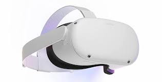
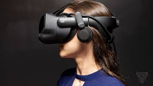

Let's explore the captivating realm of virtual reality (VR), a groundbreaking technology that immerses users in lifelike digital environments, blurring the line between the physical and virtual worlds. VR technology utilizes headsets or goggles equipped with motion-tracking sensors to create immersive experiences that simulate realistic three-dimensional visuals and interactive environments. Whether exploring fantastical realms, simulating real-world scenarios, or interacting with digital avatars, VR offers endless possibilities for entertainment, education, and innovation.
One of the most compelling aspects of virtual reality is its ability to transport users to entirely new worlds and experiences. From scaling towering mountains to traversing the depths of the ocean, VR allows individuals to explore environments and scenarios that would otherwise be inaccessible or impractical in the physical world. Whether for entertainment purposes, such as gaming and immersive storytelling, or for educational and training applications, such as virtual field trips or simulated medical procedures, VR enables users to engage with content in ways that transcend traditional media formats, fostering a sense of presence and agency within the virtual environment.
Moreover, virtual reality has the potential to revolutionize how we connect and communicate with others. Social VR platforms enable users to interact with friends, family, and strangers in shared virtual spaces, breaking down geographical barriers and fostering meaningful social connections across distances. Whether attending virtual concerts, collaborating on projects in virtual workspaces, or simply hanging out in virtual environments, social VR experiences offer a sense of presence and intimacy that traditional communication tools lack. Additionally, VR-based therapies are being explored as a means of addressing mental health issues such as anxiety and PTSD, providing immersive environments for exposure therapy and relaxation techniques.
Furthermore, virtual reality holds promise for transforming industries ranging from healthcare and education to architecture and tourism. In healthcare, VR simulations can provide realistic training scenarios for medical professionals, allowing them to practice procedures and techniques in a safe and controlled environment. In education, VR experiences can enhance learning by providing immersive, interactive lessons that cater to diverse learning styles. In architecture and urban planning, VR enables designers to visualize and iterate on projects in real time, facilitating better communication with clients and stakeholders. As VR technology continues to evolve and become more accessible, its potential to revolutionize how we experience and interact with the world around us is virtually limitless.